Chapter 2 — The Container
Staging died at 6:50 a.m., which was, Maya would later admit, the politest possible time for it.
The nightly CI run had deployed her branch — the decomposition Elias had blessed, splitting the 600-line god service into ReportService and ProgramService — and the pod never went Ready. At the bottom of the log, her first Spring stack trace that wasn't about her code's logic at all:
BeanCurrentlyInCreationException: Error creating bean with name 'reportService': Requested bean is currently in creation: Is there an unresolvable circular reference?
The trace was almost conversational: reportService needs programService, which needs reportService — currently in creation. The container had walked her dependency graph, found a loop, and refused to play. The loop was in her own diff:
@Service
public class ReportService {
private final ProgramService programs; // digest rows need program names
public ReportService(ProgramService programs) {
this.programs = programs;
}
}
@Service
public class ProgramService {
private final ReportService reports; // program summaries need report counts
public ProgramService(ReportService reports) {
this.reports = reports;
}
}
Each constructor demanded the other bean, finished and whole, before its own first line could run. No order could satisfy that. My old main() at Meridian would never have let me type this, she thought. Hand-wiring the graph meant choosing the construction order yourself — two new calls that each demand the other's result first is a line that can't be written. The container had just rediscovered, at boot, what my fingers used to know.
It was also, she registered distantly, a Tuesday. ADR-001 was a week old — dependencies point one direction, arrive through constructors, the boundary speaks contracts — and Elias's prophecy had been specific: the first violation wouldn't be malice; it would be a Tuesday. Here it was, written by the constitution's own author — a cycle is the direction rule with no direction left at all. The one mercy: because both dependencies arrived through constructors, the container had to face the loop while building the graph. It died on the launch pad instead of in a heap dump.
Idris read over her shoulder, deadpan. "Spring failing at startup is the system doing you a favor. Prod failing at noon never writes you a stack trace this polite. Frame it."
She didn't get the chance. At 11:20, support escalated a P1, and the week stopped being funny.
A researcher attached a screenshot of their report-preview pane: a draft vulnerability write-up — detailed, severity-scored, internal — belonging to a different researcher, against a different company's program. On Glasshouse, whose entire product was the promise that disclosure stays controlled, that wasn't a bug; it was the apocalypse with a ticket number. Lena appeared at Maya's desk, laptop held like a subpoena: the affected customer was threatening to pull their program. "I need a sentence I can say out loud. Preferably one with the word contained in it."
The investigation
The preview pane was rendered by DraftPreviewService, a class older than half the team. Maya's stomach dropped before she consciously knew why:
@Service
public class DraftPreviewService {
private final DraftRepository drafts;
private final PreviewTemplate template;
private Draft currentDraft; // 2019: "temp cache, avoids double-load" — git blame
public DraftPreviewService(DraftRepository drafts, PreviewTemplate template) {
this.drafts = drafts;
this.template = template;
}
public PreviewHtml render(Long draftId, ResearcherId viewer) {
this.currentDraft = drafts.load(draftId); // step 1: stash on a field
applyRedactionsFor(viewer); // step 2: mutate the field
return template.render(this.currentDraft); // step 3: read it back
}
}
⏸ Your call. Maya's stomach knows before she does. Before the next line names it: what is wrong with this class, how does researcher A's draft reach researcher B's screen, and which -ility just failed? Commit.
A mutable field. On a @Service. Written at the top of every call, read at the bottom.
And at Meridian this would have been fine, she thought, and made herself finish the thought, because it was the whole bug. There I'd have written new DraftPreviewService(...) inside the handler — one object per call, the field dying with the stack frame. "I'll just new it" was correct in a hand-wired world. Spring never hands you a fresh one. The default is one shared instance. For everything. Forever.
She said it out loud: "At Meridian I'd have new-ed one per request. Here there is exactly one. Forever."
One instance, one currentDraft field, every Tomcat worker thread writing to it. Researcher A's request stashes draft A. Researcher B lands on another thread and stashes draft B into the same field. Thread A reaches step 3 and renders whatever is there now. The field is shared because the object is shared; nothing more is required for the race. It was seven years old. Her own digest work had added a preview prefetch that multiplied calls to render() by fifty. She hadn't written the bug. She'd built it a highway.
(If you called the field at the pause: the loud -ility down is security — wrong researcher, wrong company. A quieter one hides behind it; Elias will make her name it at the Wall.)
The Canary was already on her desk — Elias had seen the P1 too. House rule, the one he'd issued in January with the bird itself (whoever owns the gnarliest open bug explains it to the bird, out loud and in full sentences, before escalating to a human): you'll want this; everyone does eventually. Eventually was a Tuesday. She picked up the dented yellow bird, felt ridiculous for four seconds, and explained in full sentences: "You are a singleton. There is one of you for the whole application. Your field is a whiteboard bolted to the kitchen wall: every request that walks past writes its secrets on it and reads whatever the last person wrote. The fix is not a better whiteboard. It's to stop owning a whiteboard."
Saying it out loud surfaced the second half: fixing this class prevented nothing about the next one.
What the senior sees
Elias was at the Wall when she found him, green pen already out. He drew a tall empty column next to the sun-bleached DO NOT ERASE note.
"Two failures, one week," he said. "A cycle and a leak. Tell me what they have in common."
"They're both… me not knowing what the container actually does between main() and the first request."
"Good. So let's watch it work." He wrote IoC at the top of the column. "Inversion of control isn't a slogan. You never call new on a collaborator — you declare what you need, and the container builds the graph: construction order, lifetime, all decided for you. Both of this week's failures happened inside decisions you didn't know it was making." Component scan came first. @ComponentScan walks the packages and finds the stereotypes — @Component and its specializations @Service, @Repository, @Controller, plus @Configuration classes with their @Bean methods. What it registers is not objects but recipes: BeanDefinitions. "Then the first hook," he said. "BeanFactoryPostProcessors run against those definitions, before any bean exists — that's how @Configuration classes get parsed and property placeholders resolved. Later, BeanPostProcessors run against the instances. One edits the recipe, the other decorates the cake. Now — why did your cycle kill staging at boot instead of prod at noon?"
"Because the ApplicationContext doesn't wait. It builds every singleton eagerly at startup."
"Yes. A plain BeanFactory is just a lazy lookup — ask, receive. The ApplicationContext is a BeanFactory with opinions: it pre-instantiates every singleton during refresh, registers the post-processors automatically, publishes events, owns the Environment. Eager creation means wiring mistakes detonate on the launch pad, where they cost nothing." So the ApplicationContext is my old main(), she thought, — the dependency-ordered wiring I used to type by hand, plus lifetimes, plus a biography for every object it builds.
"Idris gave you the operations version at six fifty," Elias added. "Here's the architecture version. Eager creation is a free integration test on every deploy: the whole singleton graph — every constructor, every @PostConstruct — must succeed before the pod's readiness probe goes green, so a wiring mistake structurally cannot reach a user. That's availability, purchased at boot. We never sell it back — sprinkle @Lazy to speed up restarts and the first failure quietly moves from the pipeline to the first unlucky request at noon."
He made her build the biography down the new column, in her handwriting, question by question, until she could recite it cold:
instantiate → populate dependencies → *Aware callbacks → BeanPostProcessor.postProcessBeforeInitialization → @PostConstruct / afterPropertiesSet → init method → BeanPostProcessor.postProcessAfterInitialization → in service → @PreDestroy / DisposableBean.
"Where does @PostConstruct come from?" he asked.
"The annotation?"
He just looked at her. "Show me the mechanism."
She opened the framework source instead of guessing, and found it: CommonAnnotationBeanPostProcessor, Spring's own BeanPostProcessor. It scans each bean for the annotation and invokes the method during the before-initialization phase. A hook, using the hook system.
"So @PostConstruct isn't a feature of Java," she said slowly. "It's a customer of the lifecycle, same as anything I could write."
"Everything is. That's the design." Then he tapped the last entry before in service — postProcessAfterInitialization — and held the pen there. "Remember this spot. Something important is born here. Not today's lesson. Soon."
He drew a star beside it. By standup the column ran the height of the Wall, a vertical spine beside the sun-bleached note:

They did the cycle next. Spring keeps three caches while building singletons: finished beans in singletonObjects, half-built beans exposed early in earlySingletonObjects, and singletonFactories — factories that can hand out a reference to a bean that exists but isn't initialized yet. That machinery means a setter or field cycle is resolvable. A is instantiated, registers its early factory, starts populating, and needs B. B is built; when it needs A, it receives A's early reference from the cache. Both finish. The early reference is what breaks the deadlock. "But your cycle was in the constructors," he said. "An early reference requires the object to exist. A constructor cycle needs each object before the other's first line can run. There is nothing for the cache to hand out."
"And the catch," he added, "is that the early reference escapes before initialization finishes — your neighbor receives a bean whose @PostConstruct hasn't run yet. The cache is clever enough to mint AOP proxies early, so those survive the loop. If a post-processor replaces the bean after init, the reference your neighbor holds and the bean the container keeps are two different objects — and Spring aborts the boot rather than let that stand. One reason Boot has shipped with circular references disabled by default since 2.6: even resolvable cycles fail fast unless you opt back in. The framework decided your design smell wasn't worth its cleverness. It's right."
Thirty seconds of quick-fire, pen popping against the board: two beans, one type? @Primary declares the default; @Qualifier picks by name at the injection point. A bean whose job is manufacturing another bean? FactoryBean<T>: ask for it, get the product; prefix the name with & for the factory itself. Scopes beyond singleton: prototype — a new instance per injection point or lookup — and @RequestScope/@SessionScope for web state. "With one famous catch," he said. "Injection happens once, at startup — so a prototype injected into a singleton is resolved a single time and held forever. Unless you go through an ObjectProvider or a scoped proxy that re-resolves per use, the narrow scope drowns in the wide one."
"So I could slap @RequestScope on DraftPreviewService," Maya said. "Make it behave like an object I'd new-ed inside the handler."
"You could. Why won't you?"
"Because the state shouldn't exist at all. Scope would be a patch over a field that has no reason to live. It needs to be stateless, not differently stateful."
"One more -ility and you pass," he said. "Name what statelessness buys at the system level."
She thought of Idris's pod dashboards. "Scalability. The load balancer assumes any replica can serve any request — only true if no instance holds state between calls. Today the field lied between two threads in one JVM; three pods behind a balancer and it lies between machines."
"So the stateless-singleton rule is a precondition for horizontal scale, not a style preference." Elias capped the pen. That was apparently the whole exam.
The fix
The cycle first. Elias made her try @Lazy before rejecting it, because rejecting a tool you've never held is superstition:
public ReportService(@Lazy ProgramService programs) { ... }
Staging booted. A breakpoint showed programs was no ProgramService at all but a proxy that would resolve the real bean on first use. "So it works by lying to the constructor," she said. "It hands me an IOU. The cycle's still in the design — I've just hidden it, and whatever goes wrong cashing the IOU goes wrong at first use, in production, instead of at startup, for free."
"Break-glass," Elias agreed. "Legacy code you can't reshape, a boot-order knot. Not a refactor you control."
The honest fix was the one the cycle had been pointing at. The two services didn't need each other; they both needed a third thing neither of them was. She extracted it:
@Service
public class ProgramDirectory { // the thing they were both reaching for
private final ProgramRepository programs;
private final ReportRepository reports;
public ProgramDirectory(ProgramRepository programs, ReportRepository reports) {
this.programs = programs;
this.reports = reports;
}
public ProgramSummary summaryFor(Long programId) { ... } // names + counts
}
ReportService and ProgramService each took a ProgramDirectory. Neither took the other. The graph was a DAG again, and staging went green. A circular dependency is rarely two classes that need each other, she wrote in her notes. It's one missing class that both of them are trying to be.
Then the leak. The fix was almost insultingly small. Values move down the call stack as locals and parameters. The whiteboard comes off the wall:
@Service
public class DraftPreviewService {
private final DraftRepository drafts;
private final PreviewTemplate template;
public DraftPreviewService(DraftRepository drafts, PreviewTemplate template) {
this.drafts = drafts;
this.template = template;
}
public PreviewHtml render(Long draftId, ResearcherId viewer) {
Draft draft = drafts.load(draftId);
Draft redacted = redactFor(draft, viewer); // pure function, no field
return template.render(redacted);
}
}
The collaborator fields are final, set once in the constructor, and safe to share across every thread because they never change. Per-request data lives and dies on the stack. The diff was a dozen lines; the consequence was a customer retained.
That evening Elias stopped at her desk and set the printed postmortem draft back down. "January's review caught forty-seven problems because I happened to read forty pages of your code. Nobody reviewed 2019's currentDraft field into existence — somebody reviewed it through. And your cycle sailed past me wearing my own blessing. What does that tell you about review as enforcement?"
"That it's vigilance," Maya said. "And vigilance decays — with headcount, with deadlines, with whoever's tired on a Thursday."
"So. Architecture you can't enforce is architecture you hope for. The question is what enforcement costs."
⚖ Your move, architect
How do you stop the next violation — the mutable field or constructor knot not yet written, by an engineer not yet hired? Before reading on, commit.
- A — Review vigilance, sharpened. A checklist in the PR template, the green pen's rules taught at onboarding. Free, immediate, zero infrastructure.
- B — Real module walls. Spring Modulith or JPMS boundaries: illegal dependencies become unexpressible — rejected by the module verifier — not merely detectable.
- C — Fitness functions in CI. ArchUnit tests asserting the constitution itself — field injection, mutable singleton state, dependency direction, entities on the wire — failing the build, by rule name, on violation. (The build-time check Chapter 1's fork promised.)
The trade-offs, since you've committed: A costs nothing and decays — forty-seven catches in January, zero this week; the evolvability it guards lives in the heads of whoever hasn't quit yet. B buys the strongest enforceability at the heaviest cost — a quarter of migration for a seven-year monolith, bought before Atrium's borders have settled. C is what they chose: a fitness function asserts a property of the architecture, not a behavior of the code — the constitution made executable, enforcement that survives personnel, which is what evolvability requires. Its tax: rule maintenance, documented escape hatches, the occasional morning arguing with a robot. The move rhymes with January's seams fork (package-by-feature chosen over a microservice cut precisely because it kept the split purchasable later): C keeps B purchasable — every ArchUnit rule today is a border Modulith could harden later — at a tenth of the cost tonight.
Small fixes don't prevent recurrence, so she made it structural. The new rule was plain: singleton beans hold no mutable state — collaborators final, request data flows through parameters, anything genuinely stateful must justify its scope in review. It joined ADR-001's rules in a constitution that went into the same PR as tests. Idris wired the ArchUnit rules into CI, failing the build on non-final instance fields in @Service/@Component classes, each failure naming its law:
@ArchTest
static final ArchRule singletonsHoldNoMutableState =
fields().that().areDeclaredInClassesThat().areAnnotatedWith(Service.class)
.or().areDeclaredInClassesThat().areAnnotatedWith(Component.class)
.should().beFinal()
.because("ADR-002: singleton beans hold no mutable state");
Beside it went the constitutional core — ADR-001's direction, the invariant from the Wall. ArchUnit can assert that kind of rule too: not which fields must be final, but which packages a class is allowed to depend on. Maya read it twice before approving. It was the first time the domain knows nothing about the web had existed anywhere a deadline couldn't erase it:
@ArchTest
static final ArchRule dependenciesPointInward =
noClasses().that().resideInAPackage("..digest..")
.and().areNotAnnotatedWith(RestController.class)
.should().dependOnClassesThat()
.resideInAnyPackage("..web..", "jakarta.servlet..")
.because("ADR-002: the domain knows nothing about the web — ADR-001's rule, enforced");
ADR-002 — Executable architecture (fitness functions). Context: ADR-001's rules were violated within a fortnight — innocently, by their own author; review vigilance decays and doesn't survive turnover. Decision: The constitution becomes a test suite: ArchUnit rules in CI fail the build on field injection, non-final singleton state, dependency-direction violations, and entities returned from controllers; eager singleton startup is treated as a free integration test and never traded away. Consequences: Violations fail the build with the rule named, instead of surfacing as a P1 with a customer attached. Costs accepted: rule maintenance, documented escape hatches, and arguing with a robot instead of with Elias.
She wrote PM-31, her first postmortem, owning both halves of the week under one title: Two faces of the same ignorance. Lena got her sentence with contained in it, plus one she liked better: structurally can't recur.
The decomposition branch merged Thursday and deployed clean. Buried in it, unremarked by anyone — including its author — bulkTriage() now called this.updateStatus(), a method wearing a @Transactional annotation no caller would ever reach the way the container intended. Nothing failed. Nothing would, for a while.
Friday, a calendar invite from Elias appeared for early February: "The proxy talk." Below it, one sentence: Bring the lifecycle column. We're going back to the spot I told you to remember.
The debrief — Ch.2, The Container
Walk the bean lifecycle — where exactly do
BeanPostProcessors run, and how is@PostConstructimplemented? Claim: a Spring bean's life is a fixed, hookable state machine driven by the container, and the hooks are where every "magic" feature actually lives. Mechanism: instantiate → populate dependencies →*Awarecallbacks →BeanPostProcessor.postProcessBeforeInitialization→@PostConstruct/afterPropertiesSet→ init method →BeanPostProcessor.postProcessAfterInitialization→ in service →@PreDestroy/DisposableBean;@PostConstructis no JVM feature butCommonAnnotationBeanPostProcessor— a BPP Spring ships — finding the annotation and invoking the method in the before-init phase, whileBeanFactoryPostProcessors run earlier still, against bean definitions rather than instances. Trade-off: eager singleton creation plus uniform hooks means wiring mistakes explode at startup (cheap) and frameworks get a universal decoration point — paid for with boot-time work and a container you must understand. Failure mode:@PostConstructruns beforepostProcessAfterInitialization, so it sees the raw, undecorated bean — rely inside it on anything added in after-init (proxies, most famously) and it silently isn't there yet.
THE ARCHITECT'S LENS
- -ilities at stake: Availability as fail-fast integrity — eager singleton creation means a pod that can't construct its graph never goes
Ready; a whole failure class moves from 2 a.m. to the pipeline. Scalability as precondition — any-replica-serves-any-request is only true when singletons hold no instance state. And the chapter's real subject, evolvability through enforceability: architecture you can prove with a failing build, not hope for in review. - The ADR: ADR-002 — executable architecture: the ADR-001 constitution plus the stateless-singleton rule, enforced by ArchUnit fitness functions in CI; eager startup never traded away.
- Rejected alternatives: review vigilance alone (free; decays with headcount — 47 catches in January, zero this week);
@RequestScopeon the leaky service (differently stateful, not stateless — a patch over a field with no reason to live); full Spring Modulith/JPMS walls now (strongest enforcement, a quarter-long migration — kept purchasable, ADR-002's rules as the down payment). - Fight or lean: Lean on the strict container — eager refresh, constructor-cycle refusal, circular references off by default since 2.6: the framework declining to be clever for you is a gift. Fight the reflex to make bad shapes boot —
@LazyIOUs and exotic scopes convert launch-pad failures back into 2 a.m. ones.
Story anchors
- The 6:50 a.m. staging corpse and Idris's "polite stack trace" → eager singleton instantiation in the
ApplicationContext: constructor cycles fail at boot — startup-time failure is a feature. - One draft field, two researchers, the whiteboard bolted to the kitchen wall → singleton is Spring's default scope (the #1 flip for hand-wired instincts — a bean is not an object you just
new-ed for this call); singleton beans must be stateless. - Elias's pen tapping
BPP.after— "something important is born here" →BeanPostProcessors decorate every bean during initialization;@PostConstructis one of them (CommonAnnotationBeanPostProcessor), and proxies are born one step later. - The red CI build naming its own law — "ADR-002: singleton beans hold no mutable state" → a fitness function asserts a property of the architecture, not a behavior of the code.
Interview ammo
- Kill-shot #2 — walk the bean lifecycle; where do BPPs run; how is
@PostConstructimplemented? Instantiate → populate →*Aware→ BPP.before →@PostConstruct/init → BPP.after → ready → destroy callbacks;@PostConstructis executed byCommonAnnotationBeanPostProcessorin before-init, and AOP proxies are minted in after-init. - Kill-shot #3 — how does Spring resolve a circular dependency, and when can't it? Setter/field cycles between singletons resolve via the three-level cache — a factory in
singletonFactoriesmints an early reference, promoted throughearlySingletonObjectsintosingletonObjects— but constructor cycles can't, because each object must exist before the other's constructor runs; since Boot 2.6 even resolvable cycles fail fast unless you opt back in. - Follow-up — why did Boot turn circular-reference resolution off by default? The early reference escapes before initialization completes — the neighbor holds a bean whose
@PostConstructhasn't run — and post-init wrapping makes the early and final references diverge (Spring detects this and aborts); failing at startup beats debugging a half-initialized object, and the honest fix is extracting the third collaborator both sides need. - Follow-up — how do you safely use a prototype or request-scoped bean inside a singleton? Injection happens exactly once at startup, so a plain reference freezes the first instance forever; inject an
ObjectProvider<T>(or use a scoped proxy) so resolution happens per use instead of per wiring. - Architect follow-up — how do you keep architectural rules alive after the architect leaves the room? Make them executable: fitness functions (ArchUnit, module verification) that fail the build with rule and reason named — vigilance decays with headcount, a red build argues back at every commit; the cost is rule maintenance and adjudicating exceptions.
Pointers → Playbook Ch.1 · examples/ch01_core/ (BeanLifecycleAndPostProcessors.java, ScopesAndCircularDeps.java)